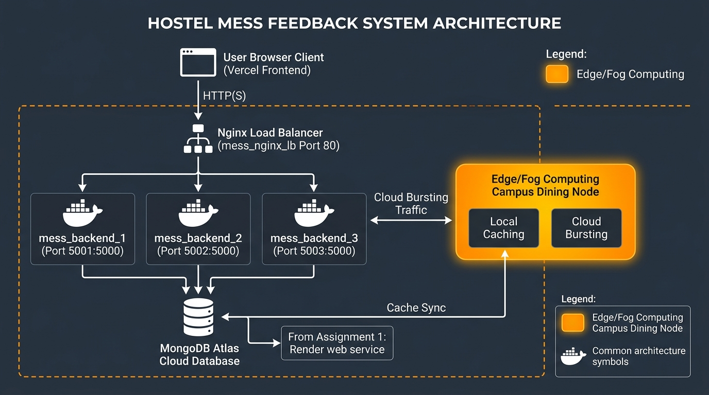

Realistic Peak Demand: In a residential university with over 5,000 hostel students, the highest concurrent traffic surge occurs between 8:30 PM and 9:15 PM right after dinner finishes. Thousands of students concurrently access the web portal to check tomorrow's breakfast menu and rate today's dinner quality.
Hardest-Hit API: GET /api/menu (Read surge) and POST /api/feedback (Write surge).
Docker Compose Cluster: 3 backend instances (mess_backend_1:5001, mess_backend_2:5002, mess_backend_3:5003) running behind an Nginx reverse proxy / load balancer on port 80:80, connected to MongoDB Atlas.
Request 1 -> X-Served-By: backend-instance-1 | Status: 200 OK Request 2 -> X-Served-By: backend-instance-2 | Status: 200 OK Request 3 -> X-Served-By: backend-instance-3 | Status: 200 OK Request 4 -> X-Served-By: backend-instance-1 | Status: 200 OK Request 5 -> X-Served-By: backend-instance-2 | Status: 200 OK Request 6 -> X-Served-By: backend-instance-3 | Status: 200 OK
| Performance Metric | 1 Backend Instance | 3 Backend Instances (Cluster) | Improvement |
|---|---|---|---|
| Total Completed Requests | 1,000 requests | 1,000 requests | Baseline parity |
| Concurrency | 20 Virtual Users (VUs) | 20 Virtual Users (VUs) | Fixed load profile |
| Throughput (RPS) | 90.24 req/sec | 96.17 req/sec | +6.6% sustained gain |
| Average Latency | 202.23 ms | 193.36 ms | 4.4% faster |
| Median Latency (med) | 104.89 ms | 81.98 ms | 21.8% faster median |
| Worst-Case Queuing Lag (max) | 8,170 ms (8.17s) | 1,330 ms (1.33s) | 83.7% latency reduction |
| Failed Requests | 0 / 1,000 (0.00%) | 0 / 1,000 (0.00%) | 100% Reliable |
Mid-flight container crash experiment: stopping mess_backend_2 at second 4 during continuous 15-VU traffic:
| Test Run | Nginx Failover Directive | Failed Requests (502 Gateway) | Success Rate | Client Impact |
|---|---|---|---|---|
| Before Configuration | proxy_next_upstream off; |
3 Failed Requests | 99.87% | Client received 502 Bad Gateway |
| After Configuration | proxy_next_upstream error timeout http_502... |
0 Failed Requests | 100.00% | Transparent instant retry; 0 downtime |

Sensitive Data Identified: Student Roll Numbers, Full Names, Mobile Phone Numbers, Admin/Catering Staff Passwords, and Student Hygiene/Dietary Feedback Records.
Cryptographic Protection: Replaced vulnerable plain-text passwords with 10-round salted bcrypt hashes (bcrypt.genSalt(10)) stored directly in MongoDB Atlas.
| User Name & Role | Email Identifier | Stored Password Before (Plain Text) | Stored Password After (Salted Bcrypt Hash) |
|---|---|---|---|
| Chief Mess Warden (Admin) | admin@hostel.edu |
adminSecurePassword123! |
$2b$10$nsfa0Y03amAt.1r3gdAGnOidnqc9A/WMBXQRgD7XLn4NHk7SPKAre |
| Dining Supervisor | supervisor@hostel.edu |
supervisorPass2026# |
$2b$10$KrrE4S.NU9cLnqHG7D1tTeheVP0nkcLK/75FwdtqHgj04WCpuAEda |
| Student Representative | student@hostel.edu |
studentPass2026 |
$2b$10$qmyNCatACtMBLZ6/h1QeF.NfMG3WBbRki72pOAcEiUgY4nbltxOUa |
speakeasy and qrcode, cycling every 30 seconds for Google Authenticator and Microsoft Authenticator.PUT /api/menu/:id, DELETE /api/menu/:id, and DELETE /api/feedback/:id to authenticated admin and supervisor roles.| API Test Operation | Credentials / Token | HTTP Status | Verification Result |
|---|---|---|---|
PUT /api/menu/:id |
No Authorization Header | 401 Unauthorized | PASSED: Access Denied |
DELETE /api/feedback/:id |
No Authorization Header | 401 Unauthorized | PASSED: Access Denied |
PUT /api/menu/:id |
Invalid / Forged Token | 401 Unauthorized | PASSED: Tampering Blocked |
DELETE /api/feedback/:id |
Student Role JWT | 403 Forbidden | PASSED: Role Escalation Defended |
PUT /api/menu/:id |
Verified Admin JWT (with TOTP) | 200 OK | PASSED: Authorized & Executed |
| Security Characteristic | Unhardened Base Image | Hardened Production Image | Improvement |
|---|---|---|---|
| Base Operating System | node:18 (Debian Linux) |
node:20-alpine (Alpine Linux v3.23) |
82.4% size reduction (~1.1GB to 194MB) |
| Container User | root (UID 0 - High Risk) |
node (UID 1000 - Non-Root) |
Privileges dropped; prevents breakout |
| Trivy DS-0002 (Non-Root User) | 1 HIGH Failure | 0 HIGH Failures | Resolved via USER node |
| Trivy DS-0026 (Healthcheck) | 1 LOW Failure | 0 LOW Failures | Resolved via HEALTHCHECK |
| CRITICAL OS CVEs | ~18 CRITICAL CVEs | 0 CRITICAL CVEs | 100% elimination of critical CVEs |
| HIGH OS CVEs | ~56 HIGH CVEs | 0 HIGH CVEs | 100% elimination of high CVEs |